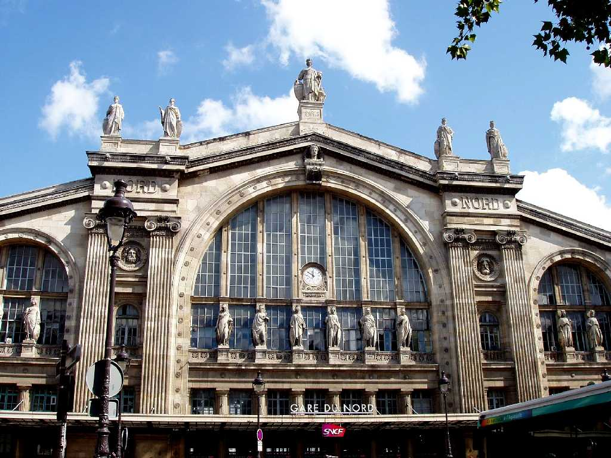
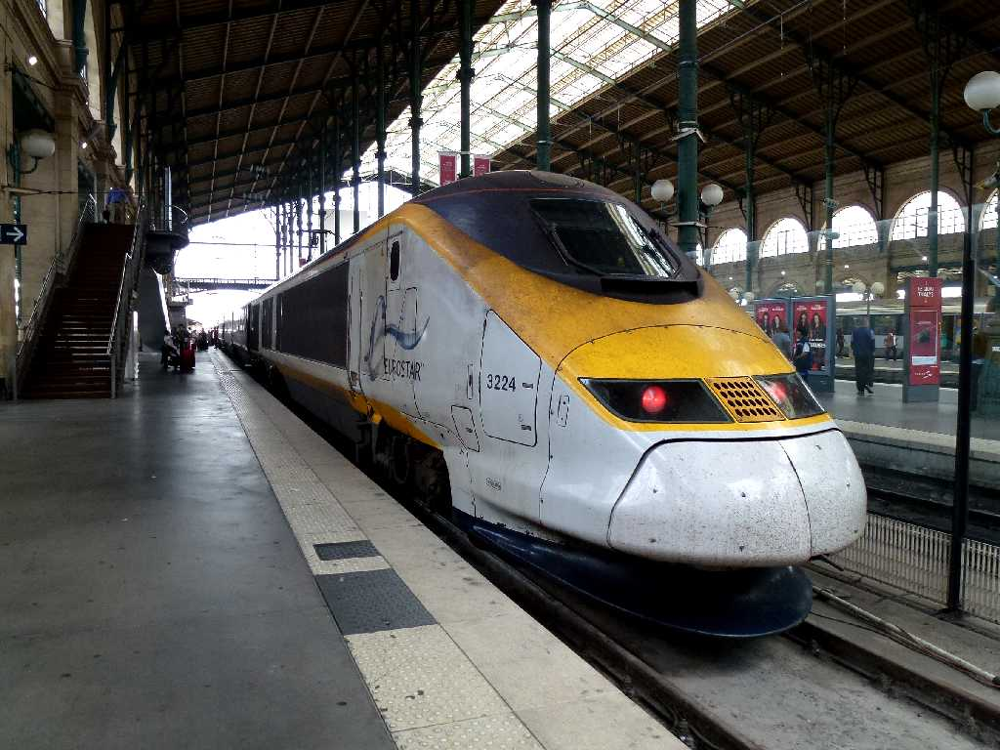

Gare du Nord Paris
８０日間世界一周鉄道の旅で５０日目の今日はユーロスターES9037番列車でフランスのパリ北駅を離れ３４８㎞を１時間１７分で走りロンドンのセントパンクラス駅に向け走る

August 12 2013 Gare du Nord Paris
Eurostar Train No.ES9037 14:43 Gare du Nord Paris to 16:00 St. Pancras London